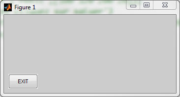
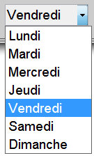

Les contrôles Uicontrol()
La fonction uicontrol() permet de créer différents types de contrôles graphiques, Checkbox, Edit, Frame, Listboxe, Popupmenu, Pushbutton, Radiobutton, Slider, Text, Togglebutton.
C'est la valeur qu'on affecte à la propriété style qui définit la nature du contrôle qui sera crée.
id = uicontrol(parent, 'style', 'valeur' , . . .)
id : identificateur du widget, on peut donner le nom que l'on désire
parent: identificateur de la fenêtre dans laquelle le widget sera affiché
style: propriété qui permet de définir la nature du widget que l'on désire créer. Elle peut prendre les valeurs checkbox, edit, frame, listbox, popupmenu, pushbutton, slider, text, togglebutton
Exemple: Pour créer un bouton
b1 = uicontrol(fh, 'style', 'pushbutton', 'position', [0.1 0.4 0.3 0.2], 'str', 'Bouton', 'callback', @fonction1);
Voici les Propriétés communes aux contrôles crées à l'aide de la fonction uicontrol(). Toutes les propriétés ne s'applique pas à tous les contrôles.
| backgroundcolor | Couleur de fond du contrôle. On peut utiliser une matrice [rouge vert bleu] ou les
couleurs prédéfinies: 'r' ou 'red', 'g' ou 'green' , 'b' ou 'blue' , 'y' ou 'yellow' , 'm' ou 'magenta' , 'c' ou 'cyan' , 'w' ou 'white' , 'k' ou 'black' |
| BeingDeleted | |
| BusyAction | |
| ButtonDownFcn | |
| Callback |
définit la fonction qui sera appelée si le contrôle est cliqué. |
| CData | image qui sera affichée sur le contrôle |
| Children | Retourne la liste des enfants du contrôle |
| CreateFcn | Fonction qui sera exécutée lors de la création du contrôle |
| DeleteFcn | Fonction qui sera exécutée lors de la suppression du contrôle |
| Enable | définit si le control est opérationnel ou non. Elle peut prendre les valeurs {on} | inactive | off |
| Extend | |
| FontAngle | {normal} | italic | oblique |
| FontName |
nom de la fonte |
| FontSize |
Taille de la fonte dans l'unité précisée par la propriété FontUnits |
| FontUnits |
inches | centimeters | normalized | {points} | pixels |
| FontWeight |
light | {normal} | demi | bold |
| ForegroundColor |
couleur du texte précisé par la propriété 'String' |
| HandleVisibility | |
| HitTest | |
| HorizontalAlignment |
left | {center} | right |
| Interruptible | mode d?interruption de la fonction callback |
| KeyPressFcn | fonction exécuté si on appuie sur une touche du clavier |
| ListboxTop |
|
| Max |
|
| Min |
|
| Parent | identificateur du père. C'st le premier paramètre précisé lors de la création du contrôle |
| Position | Position par rapport au père.On peut changer les unités à l'aide de la propriété units |
| Selected | Pour savoir si le contrôle est sélectionné ou non |
| SelectionHighlight | |
| SliderStep | |
| String | Le texte affiché sur le contrôle |
| Style |
{pushbutton} | togglebutton | radiobutton | checkbox | edit | text | slider | frame | listbox |
popupmenu |
| Tag |
|
| TooltipString |
|
| UIContextMenu | |
| Units |
Unité de mesure pour le paramètre Position. Elle peut prendre les valeurs: inches | centimeters | normalized | points | {pixels} | characters |
| UserData |
|
| Value | Valeur actuelle du contrôle. 1 s'il est sélectionné, 0 sinon. |
| Visible | Définit si le groupe de bouton est visible ou pas, il peut prendre les valeur on ou off |
Le contrôle Checkbox
C'est le contrôle case à cocher classique . S'il y en plusieurs, il préférable de les placer dans un conteneur de type uipanel ce qui permettra éventuellement de les déplacer en bloc dans la fenêtre.Quand le contrôle est coché, sa propriété 'value' est égale à 1
Voici quelques propriétés du contrôle Checkbox.Voir uicontrol() pour plus de propriétés
| backgroundcolor | Couleur de fond du contrôle. On peut utiliser un triplet [rouge vert bleu] ou les
couleurs prédéfinies: 'r' ou 'red', 'g' ou 'green' , 'b' ou 'blue' , 'y' ou 'yellow' , 'm' ou 'magenta' , 'c' ou 'cyan' , 'w' ou 'white' , 'k' ou 'black' |
| Callback |
définit la fonction qui sera appelée quand le checkbox est cliqué. |
| Enable | définit si le contrôle est opérationnel ou non. Elle peut prendre les valeurs {on} | inactive | off |
| ForegroundColor |
couleur du texte précisé par la propriété 'String' |
| HorizontalAlignment |
left | {center} | right |
| Parent | identificateur du père. C'est le premier paramètre précisé lors de la création du contrôle |
| Position | Position par rapport au père.On peut changer les unités à l'aide de la propriété units |
| String | Le texte affiché sur le contrôle |
| Units |
Unité de mesure pour le paramètre Position. Elle peut prendre les valeurs: inches | centimeters | normalized | points | {pixels} | characters |
| Value | Valeur actuelle du contrôle. 1 s'il est sélectionné, 0 sinon. |
| Visible | Définit si le groupe de bouton est visible ou pas, il peut prendre les valeur on ou off |
Exemple: Lancez le programme, cochez quelques cases et cliquez sur les boutons. L'affichage se fait sur la fenêtre de commande matlab.
Dans cet exemple, nous avons utilisé des variables globales pour communiquer les identificateurs d'objet aux fonctions callback. Consulter cette section pour voir d'autres possibilité.
| function checkbox() % Exemple contrôle Checkbox global pan1 chb1 chb2 chb3 chb4 close all fh = figure('Units', 'Normalized', 'Position',[0.6 0.6 0.1 0.3],'MenuBar','none'); fond = get(fh,'color'); pan1 = uipanel(fh, 'Title','Choix', 'position',[0.02 0.02 0.9 0.6],'back',fond); chb1 = uicontrol(pan1,'style', 'Checkbox','position', [0.1 0.8 0.6 0.1],... 'String', 'Bananes', 'back',fond); chb2 = uicontrol(pan1,'style', 'Checkbox','position', [0.1 0.55 0.6 0.1],... 'String', 'Pommes', 'back',fond); chb3 = uicontrol(pan1,'style', 'Checkbox','position', [0.1 0.3 0.6 0.1],... 'String', 'Oranges', 'back',fond); chb4 = uicontrol(pan1,'style', 'Checkbox','position', [0.1 0.05 0.6 0.1],... 'String', 'abricot', 'back',fond); b1 = uicontrol(fh, 'style', 'push', 'pos',[0.1 0.82 0.8 0.15],... 'str', 'Test 1', 'call', @test1); b2 = uicontrol(fh, 'style', 'push', 'pos',[0.1 0.65 0.8 0.15],... 'str', 'Test 2', 'call', @test2); end function test1(obj,event) global pan1 hh = get(pan1,'children') %retourne un tableau d'identificateurs disp(' '); for i = 1:length(hh) s = get(hh(i),'string'); v = get(hh(i),'value'); if v disp(s); end end end function test2(obj,event) global chb1 chb2 chb3 chb4 disp(' '); if get(chb1,'value') disp(get(chb1,'string')); end if get(chb2,'value') disp(get(chb2,'string')); end if get(chb3,'value') disp(get(chb3,'string')); end if get(chb4,'value') disp(get(chb4,'string')); end end |
Le contrôle pushbutton
Pour créer un bouton, on utilise la fonction uicontrol() avec la propriété style = pushbuttonExemple:
fh = figure('Position', [400 300 350 160], 'Menubar', 'None');
b1 = uicontrol(fh, 'style', 'pushbutton', 'Position', [10 10 60 30], 'String', 'EXIT', 'callback', @fonc1);
- La propriété Position définit la géométrie du widget. (10, 10) représente les cordonnées du coin bas-gauche du widget par rapport au coin bas gauche de la fenêtre fh qui le contient. 60 est la largeur du bouton, 30 est sa hauteur. Les unités sont en pixels à moin qu
-
La propriété 'string' définit le texte qui sera affiché dans sur le bouton. Ici c'est le mot EXIT
- La propriété 'callback' défini la fonction qui sera exécutée quand on clique sur le bouton. Ici c'est la fonction fonc1()

Voici quelques propriétés du contrôle Pushbutton.Voir uicontrol() pour plus de propriétés
| backgroundcolor | Couleur de fond du contrôle. On peut utiliser un triplet [rouge vert bleu] ou les
couleurs prédéfinies: 'r' ou 'red', 'g' ou 'green' , 'b' ou 'blue' , 'y' ou 'yellow' , 'm' ou 'magenta' , 'c' ou 'cyan' , 'w' ou 'white' , 'k' ou 'black' |
| Callback |
définit la fonction qui sera appelée quand le checkbox est cliqué. |
| Enable | définit si le contrôle est opérationnel ou non. Elle peut prendre les valeurs {on} | inactive | off |
| ForegroundColor |
couleur du texte précisé par la propriété 'String' |
| HorizontalAlignment |
left | {center} | right |
| Parent | identificateur du père. C'est le premier paramètre précisé lors de la création du contrôle |
| Position | Position par rapport au père.On peut changer les unités à l'aide de la propriété units |
| String | Le texte affiché sur le contrôle |
| Units |
Unité de mesure pour le paramètre Position. Elle peut prendre les valeurs: inches | centimeters | normalized | points | {pixels} | characters |
| Visible | Définit si le groupe de bouton est visible ou pas, il peut prendre les valeur on ou off |
Le Contrôle Edit
Ce Contrôle crée un champs de saisie à une seule ligne.id = uicontrol(fh, 'style', 'Edit', 'Posit', [0.4 0.5 0.15 0.1] );
Pour récupérer le contenu du champs de saisie ou afficher quelques chose dedans, on utilise les fonction get() et set() et la propriété string
- s = get(id, 'string') --> affecte la chaîne affichée dans le champs de saisie à la variable s
-
set(id , 'string', 'texte') --> affiche la chaîne texte dans le champs de saisie. Normalement la valeur affectée à la propriété string doit être une chaîne de caractères, mais Matlab accepte une valeur de type numérique et fait la conversion automatiquement:
set(id , 'string', 125) -
Les fonctions num2str() et str2num() peuvent s'avérer utiles lors de l'utilisation de ce contrôle
| backgroundcolor | Couleur de fond du contrôle. On peut utiliser un
triplet [rouge vert bleu] ou les couleurs prédéfinies: 'r' ou 'red', 'g' ou 'green' , 'b' ou 'blue' , 'y' ou 'yellow' , 'm' ou 'magenta' , 'c' ou 'cyan' , 'w' ou 'white' , 'k' ou 'black' |
| Callback |
définit la fonction qui sera appelée si on valide la saisie avec la touche Enter. |
| Enable | définit si le contrôle est opérationnel ou non. Elle peut prendre les valeurs {on} | inactive | off |
| ForegroundColor |
couleur du texte affiché dans le contrôle |
| HorizontalAlignment |
left | {center} | right |
| Parent | identificateur du père. C'est le premier paramètre précisé lors de la création du contrôle |
| Position | Position par rapport au père.On peut changer les unités à l'aide de la propriété units |
| String | Le texte affiché sur le contrôle |
| Units |
Unité de mesure pour le paramètre Position. Elle peut prendre les valeurs: inches | centimeters | normalized | points | {pixels} | characters |
| Visible | Définit si le groupe de bouton est visible ou pas, il peut prendre les valeur on ou off |
Voici un exemple qui illustre l'utilisation du contrôle Edit:
Dans cet exemple, nous avons utilisé des variables globales pour communiquer les identificateurs d'objet aux fonctions callback. Consulter cette section pour voir d'autres possibilité.
| function edit0() global e1 e2 e3 close all fh = figure('Units', 'Normalized', 'Position',[0.6 0.6 0.15 0.15],... 'MenuBar','none'); set(0, 'DefaultUicontrolUnits', 'normalized') ;  e1 = uicontrol(fh,'style','EDIT','Posit',[0.5 0.7 0.3 0.2],... 'str', 22, 'fore','r','call',@alphaa); e2 = uicontrol(fh,'style','Edit','Posit',[0.5 0.4 0.3 0.2],... 'str', '44','backg','y'); e3 = uicontrol(fh,'style','EDIT','Posit',[0.5 0.1 0.3 0.2]); b1 = uicontrol(fh, 'style', 'push', 'pos',[0.1 0.4 0.3 0.2],.... 'str', 'Alpha', 'call', @alphaa); b1 = uicontrol(fh, 'style', 'push', 'pos',[0.1 0.1 0.3 0.2],... 'str', 'Num', 'call', @numm); t1 = uicontrol(fh,'style','Text','Posit',[0.1 0.7 0.3 0.2],... 'str', 'Text','back', get(gcf,'color')); end function numm(obj,event) global e1 e2 e3 n1 = str2num(get(e1,'string')); n2 = str2num(get(e2,'string')); set(e3,'string',n1+n2); end function alphaa(obj,event) global e1 e2 e3 s1 = get(e1,'string'); s2 = get(e2,'string'); set(e3,'string',[s1 s2]); end |
Le control Text
Le contrôle Text est un contrôle statique qui permet d'afficher un texte multilignes. Il est souvent appelé label dans d'autres langages.t1 = uicontrol(fh, 'style', 'Text', 'Posit', [10 10 100 100], 'str', 'mon texte', 'back', 'y');
Le contrôle Text supporte à quelques exceptions près les mêmes propriétés que le controle Edit.
Il n'y a pas (à ma connaissance) une méthode pour insérer du texte dans le contenu actuel d'un contrôle Text. Il me semble que la solution la plus simple serait de considérer le contenu du contrôle comme une matrice de cellules { }, et de concaténer les éléments que l'on désire ajouter avec le contenu actuel. L'avantage de la matrice de cellules est que les éléments ne sont pas obligatoirement de même type et de même taille.
| function text0() global tt t3 e1 close all tt={'AAAAAAA'}; fh = figure('Position',[100 100 270 450],'MenuBar','none','Name','Le contrôle Text'); fond = get(fh,'color'); t1 = uicontrol(fh,'style','Text','Posit',[10 415 250 20],'str','Champ de saisie','back',fond); e1 = uicontrol(fh,'style','Edit','Posit',[10 400 250 20]); set(e1,'back',[0.9 0.9 0],'str','Tapper quelque chose ici et cliqur sur peupler'); t2 = uicontrol(fh,'style','Text','Posit',[10 350 250 20],'str','Champ d''affichage','back',fond); t3 = uicontrol(fh,'style','Text','Posit',[10 50 250 300],'horiz','left','str',tt); b1 = uicontrol(fh,'style','push','Posit',[10 10 80 30],'str','peupler','call',@peupler); b2 = uicontrol(fh,'style','push','Posit',[120 10 80 30],'str','quitter','call',@quitter); end function peupler(obj,event) global tt t3 e1 tt = get(t3,'str'); ajou = get(e1,'str'); tt = [tt; ajou]; %tt{end+1,1}='AAAAAA'; set(t3,'str',tt); end function quitter(obj,event) disp('by-by') delete(gcf) end |
Le contrôle ToggleButton
Le contrôle ToggleButton est un PushButton avec le comportement d'un CheckBox. Quand on clique, il reste appuyé, quand on clique de nouveau, il est relâché.Pour créer un contrôle radiobutton, on utilise la fonction uicontrol avec la propriété style = radiobutton:
b1 = uicontrol(fh, 'style', 'Toglebutton', 'Position', [0.5 0.5 0.15 0.1], 'String', 'ON/OFF', 'callback', @fonc1);
Voici quelques propriétés du contrôle ToggleButton.Voir uicontrol() pour plus de propriétés
| backgroundcolor | Couleur de fond du contrôle. On peut utiliser un triplet [rouge vert bleu] ou les
couleurs prédéfinies: 'r' ou 'red', 'g' ou 'green' , 'b' ou 'blue' , 'y' ou 'yellow' , 'm' ou 'magenta' , 'c' ou 'cyan' , 'w' ou 'white' , 'k' ou 'black' |
| Callback |
définit la fonction qui sera appelée quand le checkbox est cliqué. |
| Enable | définit si le contrôle est opérationnel ou non. Elle peut prendre les valeurs {on} | inactive | off |
| ForegroundColor |
couleur du texte précisé par la propriété 'String' |
| HorizontalAlignment |
left | {center} | right |
| Max | Valeur de la propriété value quand le bouton est enfoncé. par défaut, Max = 1 |
| Min |
Valeur de la propriété value quand le bouton est relâché. par défaut, Min = 0 |
| Parent | identificateur du père. C'est le premier paramètre précisé lors de la création du contrôle |
| Position | Position par rapport au père.On peut changer les unités à l'aide de la propriété units |
| String | Le texte affiché sur le contrôle |
| Units |
Unité de mesure pour le paramètre Position. Elle peut prendre les valeurs: inches | centimeters | normalized | points | {pixels} | characters |
| Visible | Définit si le groupe de bouton est visible ou pas, il peut prendre les valeur on ou off |
Exemple:
| function togglebutton() fh = figure('MenuBar','None', 'units','normalized','Posit', [0.5 0.5 0.3 0.2]); ed = uicontrol(fh, 'style', 'Edit','units','normalized','Posit', [0.1 0.2 0.8 0.2]); tb = uicontrol(fh, 'style', 'ToggleButton','units','normalized', 'string', 'ON / OF',... 'Posit', [0.4 0.5 0.2 0.2], 'callback', @toggle); function toggle(obj, event) if get(obj,'value') set(ed, 'string', 'Le bouton est enfoncé'); else set(ed, 'string', 'Le bouton est relâché'); end end end |
Les boutons Windows, n'ont pas beaucoup de relief, on a du mal à faire la
différence entre enfoncé / relâché.
Le control radiobutton
Le contrôle Radiobutton se présente sous un petit cercle qui change de couleur quand on clique dessusIl permet de faire un choix parmi plusieurs. Pour permettre une gestion exclusive avec un seul radiobutton coché à la fois, il faut placer tous les radiobuttons du même groupe dans un contrôle uibuttongroup (voir plus bas).
Pour créer un contrôle radiobutton, on utilise la fonction uicontrol avec la propriété style = radiobutton:
rb2 = uicontrol(rbg, 'style', 'radiobutton', 'Units', 'normalized', 'position', [0.1 0.1 0.8 0.2], 'String', 'degrés');
Voici quelques propriétés de uicontrol qui s'appliquent à radiobutton
| backgroundcolor | Couleur de fond du contrôle. On peut utiliser une
matrice [rouge vert bleu] ou les couleurs prédéfinies: 'r' ou 'red', 'g' ou 'green' , 'b' ou 'blue' , 'y' ou 'yellow' , 'm' ou 'magenta' , 'c' ou 'cyan' , 'w' ou 'white' , 'k' ou 'black' |
| Callback |
définit la fonction qui sera appelée si le radiobutton est cliqué. |
| Enable | définit si le contrôle est opérationnel ou non. Elle peut prendre les valeurs {on} | inactive | off |
| FontAngle | {normal} | italic | oblique |
| FontName |
nom de la fonte |
| FontSize |
Taille de la fonte dans l'unité précisée par la propriété FontUnits |
| FontUnits |
inches | centimeters | normalized | {points} | pixels |
| FontWeight |
light | {normal} | demi | bold |
| ForegroundColor |
couleur du texte précisé par la propriété 'String' |
| HorizontalAlignment |
left | {center} | right |
| Parent | identificateur du père. C'est le premier paramètre précisé lors de la création du contrôle |
| Position | Position par rapport au père.On peut changer les unités à l'aide de la propriété units |
| String | Le texte affiché sur le contrôle |
| Units |
Unité de mesure pour le paramètre Position. Elle peut prendre les valeurs: inches | centimeters | normalized | points | {pixels} | characters |
| Value | Valeur actuelle du contrôle. 1 s'il est sélectionné, 0 sinon. |
| Visible | Définit si le groupe de bouton est visible ou pas, il peut prendre les valeur on ou off |
Voir l'exemple du contrôle uibuttongroup
Le contrôle Listbox
Le contrôle Listbox permet de sélectionner un ou plusieurs éléments dans une liste. On peut le configurer soit en mode sélection unique soit en mode sélections multiples.- Pour le mode Sélection unique, il faut que les valeurs des propriétés Mim et Max soient telles que Max-Min <= 1
- Pour le mode Sélections multiples, il faut que les valeurs des propriétés Mim et Max soient telles que Max-Min > 1 . Pour sélectionner plusieurs éléments, on utilise les regles de sélection Windows (CTRL+souris)
| backgroundcolor | Couleur de fond du contrôle. On peut utiliser un
triplet [rouge vert bleu] ou les couleurs prédéfinies: 'r' ou 'red', 'g' ou 'green' , 'b' ou 'blue' , 'y' ou 'yellow' , 'm' ou 'magenta' , 'c' ou 'cyan' , 'w' ou 'white' , 'k' ou 'black' |
| Callback |
définit la fonction qui sera appelée chaque fois qu'on séléctionne un élément du Listbox |
| Enable | définit si le contrôle est opérationnel ou non. Elle peut prendre les valeurs {on} | inactive | off |
| ForegroundColor |
Couleur du texte affiché dans le contrôle |
| ListboxTop | Si le contrôle ListBox n'est pas suffisamment grand pour afficher tous les éléments de la liste, le
paramètre ListboxTop permet alors de préciser quel est l'élément de la liste qui doit affiché en premier. ce paramètre doit être un entier compris entre 1 et le nombre d'élément de la liste. Je ne suis pas arrivé à faire marcher ce paramètre. Si vous y arrivez, merci de m'envoyer un petit mail |
| Max | utilisé pour choisir en mode sélection unique et mode sélection multiples Max-Min <= 1 => Sélection unique Max-Min > 1 => Sélections multiples |
| Min | utilisé pour choisir en mode sélection unique et mode sélection multiples Max-Min <= 1 => Sélection unique Max-Min > 1 => Sélections multiples |
| Parent | identificateur du père. C'est le premier paramètre précisé lors de la création du contrôle |
| Position | Position par rapport au père. On peut changer les unités à l'aide de la propriété units |
| String | Le texte constituant l'ensemble des éléments de la liste, de préférence sous format matrice de cellules:
{'Janvier', 'Fevrier', 'mars', 'Avril', 'Mai', 'Juin'} |
| Units |
Unité de mesure pour le paramètre Position. Elle peut prendre les valeurs: inches | centimeters | normalized | points | {pixels} | characters |
| Value | Index de l'élément courant ou vecteur d' indexes si plusieurs éléments sont sélectionnés. Cet attribut nous permet de savoir quel est l'élément sélectionné. On peut aussi le modifier par code pour choisir l'élément courant |
| Visible | Définit si le groupe de bouton est visible ou pas, il peut prendre les valeur on ou off |
Voici un exemple avec sélection unique. Dans ce programme, on n'utilise pas de variable globale. Chaque fois qu'on clique dans un élément de la liste, on invoque le callback {@voir, th} qui appelle la fonction voir() en lui passant le handle th du contrôle Text.
| function listbox_ss() close all fh = figure('MenuBar','none','Position',[400 100 250 200],... 'Name','ListBox','NumberTitle','off'); th = uicontrol(fh,'Style','Text','Position',[30 50 200 20],'foreg','r'); b2 = uicontrol(fh,'style','push','Posit',[30 10 80 30],... 'str','quitter','call',@quitter); ss = {'Janvier', 'Fevrier', 'mars', 'Avril', 'Mai', 'Juin', 'Juillet',... 'Aout', 'Septembre', 'Ocobre', 'Novembre', 'Decembre'}; lbh = uicontrol(fh,'Style','listbox','Position',[30 80 130 100],... 'String',ss,'callb',{@voir, th}); end function quitter(obj,event) disp('by-by') delete(gcf) end function voir(obj,event,th) i = get(obj,'value'); s = get(obj,'string'); set(th,'str',['Elément séléctionné --> ' s{i}]); end |
Voici un exemple avec sélection multiple.
| function listbox_ms() global lbh th1 th2 close all fh = figure('Position',[400 100 250 300],'MenuBar','none','Name','ListBox',... 'NumberTitle','off'); set(fh,'DefaultUicontrolHorizontalAlignment','left'); ss = {'Janvier', 'Fevrier', 'mars', 'Avril', 'Mai', 'Juin', 'Juillet',... 'Aout', 'Septembre', 'Ocobre', 'Novembre', 'Decembre'}; lbh = uicontrol(fh,'Style','listbox','Position',[130 185 100 105],... 'String',ss,'Min',0,'Max',2,'Value',[]); th0 = uicontrol(fh,'Style','Text','Position',[20 185 100 100]); set(th0,'str','utiliser CTRL+souris pour séléctionner plusieurs éléments puis cliquer sur Voir') th1 = uicontrol(fh,'Style','Text','Position',[20 80 100 100],'foreg','r'); th2 = uicontrol(fh,'Style','Text','Position',[130 80 100 100],'foreg','b'); b2 = uicontrol(fh,'style','push','Posit',[20 45 80 30],'str','Voir',... 'call',{@voir, lbh, th1, th2}); b3 = uicontrol(fh,'style','push','Posit',[20 10 80 30],... 'str','quitter','call',@quitter); end function quitter(obj,event) disp('by-by') delete(gcf) end function voir(obj,event, lbh, th1, th2) i = get(lbh,'value'); s = get(lbh,'str'); set(th1,'str',s(i)); % on peut aussi accédér aux éléments séléctionnées un par un set(th2,'str','') for j = i set(th2,'str',[get(th2,'str'); s(j)]); end end |
Le contrôle PopupMenu
Le contrôle PopupMenu permet de sélectionner un élément dans une liste déroulante. Ce contrôle est souvent appelé comboboxVoici quelques propriétés de uicontrol qui s'appliquent au contrôle PopupMunu
| backgroundcolor | Couleur de fond du contrôle. On peut utiliser un
triplet [rouge vert bleu] ou les couleurs prédéfinies: 'r' ou 'red', 'g' ou 'green' , 'b' ou 'blue' , 'y' ou 'yellow' , 'm' ou 'magenta' , 'c' ou 'cyan' , 'w' ou 'white' , 'k' ou 'black' |
| Callback |
définit la fonction qui sera appelée chaque fois qu'on sélectionne un élément dans le PopupMenu |
| Enable | définit si le contrôle est opérationnel ou non. Elle peut prendre les valeurs {on} | inactive | off |
| ForegroundColor |
Couleur du texte affiché dans le contrôle |
| Parent | identificateur du père. C'est le premier paramètre précisé lors de la création du contrôle |
| Position | Position par rapport au père. On peut changer les unités à l'aide de la propriété units |
| String | Le texte constituant l'ensemble des éléments de la liste, de préférence sous format matrice de cellules:
{'Janvier', 'Fevrier', 'mars', 'Avril', 'Mai', 'Juin'} |
| Units |
Unité de mesure pour le paramètre Position. Elle peut prendre les valeurs: inches | centimeters | normalized | points | {pixels} | characters |
| Value | Index de l'élément courant. Cet attribut nous permet de savoir quel est l'élément sélectionné. On peut aussi le modifier par code pour choisir l'élément courant |
| Visible | Définit si le groupe de bouton est visible ou pas, il peut prendre les valeur on ou off |
Voici un petit exemple. La liste contient les jours de la semaine. L'élément courant au départ est fixé à Vendredi à l'aide de l'attribut Value (val=5).
L'utilisation de []= lors de la création d'une fonction signifie que cette fonction ne retourne rien.
Quand un élément est sélectionné, on invoque la fonction pop_call en lui passant l'identificateur de contrôle Text dans lequel on affiche la valeur sélectionné.
| function [] = popup() % Illustration du contrôle PopupMenu close all fh = figure('position',[300 300 200 110],'numbertitle','off',... 'menubar','none','name','PopUpMenu = ComboBox'); set(fh,'DefaultUicontrolfontsize',14) poph = uicontrol(fh, 'style','popup','position',[20 10 140 40], 'back', 'c', 'fore', 'r',... 'string',{'Lundi','Mardi','Mercredi','Jeudi','Vendredi','Samedi','Dimanche'}); txth = uicontrol('style','Text','position',[20 60 140 30]); set(poph,'val', 5, 'callback',{@pop_call, txth}); end function [] = pop_call(poph, event,txth) s = get(poph,'str'); i = get(poph, 'val'); set(txth,'str',s{i}); end |
Le contrôle Slider
C'est un contrôle de type glissière du genre barre de défilement.Exemple de syntaxe:
id= uicontrol(fh, 'Style', 'slider', 'back', 'c', 'Max', 100, 'Min', 0, 'Value', 50,...
'SliderStep', [0.05 0.1], 'Position', [30 25 300 20], 'Callback', @slider1);
| backgroundcolor | Couleur de fond du contrôle. On peut utiliser un
triplet [rouge vert bleu] ou les couleurs prédéfinies: 'r' ou 'red', 'g' ou 'green' , 'b' ou 'blue' , 'y' ou 'yellow' , 'm' ou 'magenta' , 'c' ou 'cyan' , 'w' ou 'white' , 'k' ou 'black' |
| Callback |
Définit la fonction qui sera appelée chaque fois que le slider est bougé |
| Enable | définit si le contrôle est opérationnel ou non. Elle peut prendre les valeurs {on} | inactive | off |
| Max | Valeur minimale de la propriété Value {1} |
| Min |
Valeur minimale de la propriété Value {0} |
| Parent | identificateur du père. C'est le premier paramètre précisé lors de la création du contrôle |
| Position | Position par rapport au père. On peut changer
les unités à l'aide de la propriété units Si la largeur est supérieur à la hauteur, le slider est horizontal, sinon le slider est vertical |
| SliderStep |
Matrice de deux élément [minstep maxstep] indiquant les incrément de déplacement du slider Chaque fois qu'on clique sur une des flèches du Slider son curseur se déplace de minstep. Chaque fois qu'on clique dans la piste du slider à droite ou à gauche de son curseur, celui-ci se déplace de maxstep. Ces deux paramètres doivent avoir des valeurs comprises entre 0 et 1 et correspondent à un déplacement en pourcentage. Les valeurs par défaut sont [0.01 0.1] ce qui correspond à mistep = 1% de (Max - Min) et maxstep = 10% de (Max-min) |
| Units |
Unité de mesure pour le paramètre Position. Elle peut prendre les valeurs: inches | centimeters | normalized | points | {pixels} | characters |
| Value | Valeur comprise entre Min et Max indiquant la position du slider. Si on bouge le curseur Value change. Si on modifie la valeur de value, le slider bouge. |
| Visible | Définit si le groupe de bouton est visible ou pas, il peut prendre les valeur on ou off |
Exemple:
| function slider() close all; fh = figure('Position',[600 250 400 350],... 'MenuBar','none','NumberTitle','off'); sh2 = uicontrol(fh,'Style','slider','back','g',... 'Max',100,'Min',0,'Value',25,... 'SliderStep',[0.05 0.1],... 'Position',[350 25 20 300],... 'Callback',@slider2); sh1 = uicontrol(fh,'Style','slider','back','c',... 'Max',100,'Min',0,'Value',50,... 'SliderStep',[0.05 0.1],... 'Position',[30 25 300 20],... 'Callback',@slider1); eth2 = uicontrol(fh,'Style','edit',... 'String',num2str(get(sh1,'Value')),... 'Position',[30 175 240 20],... 'Callback',@edit2); eth1 = uicontrol(fh,'Style','edit',... 'String',num2str(get(sh2,'Value')),... 'Position',[30 140 240 20],... 'Callback',@edit1); sth = uicontrol(fh,'Style','text','String',... 'Entrez une valeur comprise entre 0 et 100 ou bougez les sliders',... 'Position',[30 215 240 40]); function slider1(obj,event) val = get(obj,'Value'); set(eth1,'String',round(val)); end function slider2(obj,event) val = get(obj,'Value'); set(eth2,'String',round(val)); end function edit1(obj, event) val = str2double(get(obj,'String')); mi = get(sh1,'Min'); ma = get(sh1,'Max'); val = max(val, mi); val = min(val, ma); set(sh1,'Value',val); end function edit2(obj, event) val = str2double(get(obj,'String')); mi = get(sh1,'Min'); ma = get(sh1,'Max'); val = max(val, mi); val = min(val, ma); set(sh2,'Value',val); end end |
Les autres contrôles
Le contrôle uibuttongroup
Le contrôle uibuttongroup est un conteneur (cadre) dans lequel on peut regrouper des radiobuttons ou des togglebuttons. Il permet de les gérer d'une façon exclusive de sorte qu'un seul soit coché à la fois.rbg = uibuttongroup('Parent',fh, 'Title', 'unité', 'position',[0.02 0.55 0.25 0.4],...
'backgroundcolor', [0.8 0.8 0.8], 'SelectionChangeFcn', @radio);
Voici quelques propriétés du contrôle uibuttongroup
| Parent | Identificateur (handle) de l'objet père, en général, la fenêtre dans laquelle il sera affiché |
| Position | Position en unités normalisée par rapport au père.On peut changer les unités à l'aide de la propriété units |
| Title | Titre qui sera affiché dans le cadre. Sa position est contrôlée par la propriété TitlePosition |
| TitlePosition | Position du titre dans le cadre. Elle peut prendre les valeurs {lefttop} | centertop | righttop | leftbottom | centerbottom | rightbottom |
| Units | Unité de mesure pour le paramètre Position. Elle peut prendre les valeurs inches | centimeters | {normalized} | points | pixels | characters |
| backgroundcolor | Couleur de fond du contrôle. On peut utiliser une
matrice [rouge vert bleu] ou les couleurs prédéfinies: 'r' ou 'red', 'g' ou 'green' , 'b' ou 'blue' , 'y' ou 'yellow' , 'm' ou 'magenta' , 'c' ou 'cyan' , 'w' ou 'white' , 'k' ou 'black' |
| SelectionChangeFcn | Non de la fonction qui sera appelée quand un des élément du uibuttongroup change d'état |
| SelectedObject | Identificateur (handle) de l'élément actuellement sélectionné set(rbg, 'SelectedObject', rb2) --> sélectionne l'élément dont l'identificateur (handle) est rb2. cette action ne provoque pas l'appel de la fnction définie par la propriété SelectionChangeFcn. Celle-ci est appelée seulement suite à une sélection par la souris. get(rbg, 'SelectedObject') --> retourne l'identificateur de l'élément actuellement sélectionné |
| Visible | Définit si le groupe de bouton est visible ou pas, il peut prendre les valeur on ou off |
Exemple:
| function uibuttongroup_radio() global rbg close all fh = figure('Units', 'Normalized', 'Position',[0.6 0.6 0.1 0.35],'MenuBar','none'); set(0, 'DefaultUicontrolUnits', 'normalized') ; fond = get(fh,'color'); rbg = uibuttongroup('parent',fh, 'position',[0.02 0.02 0.95 0.4],... 'Title','unité', 'back',fond,'SelectionChangeFcn',@radio); rb1 = uicontrol(rbg,'style', 'radiobutton','position', [0.1 0.1 0.8 0.2],... 'String', 'steps','back',fond); rb2 = uicontrol(rbg,'style', 'radiobutton','position',[0.1 0.4 0.8 0.2],... 'String', 'degrés','back',fond); rb3 = uicontrol(rbg,'style', 'radiobutton','position',[0.1 0.7 0.8 0.2],... 'String', 'tours','back',fond); set(rbg, 'SelectedObject',rb2); b1 = uicontrol(fh,'style','pushbutton','Posit',[0.1 0.8 0.8 0.1],'String',... 'Voir','callback',@voir); b1 = uicontrol(fh,'style','pushbutton','Posit',[0.1 0.6 0.8 0.1],... 'String','EXIT','callback',@quitter); end function radio(source,event) % source = handle du control uibuttongroup % event = événement qui s'est produit actuel_hndl = get(source,'SelectedObject'); actuel_str = get(actuel_hndl,'string'); disp(['Elément séléctionné ---> ' actuel_str]) old = get(event.OldValue,'String'); new = get(event.NewValue,'String'); disp(['Evénement: ' old ' ---> ' new]) end function voir(obj,event) global rbg actuel_hndl = get(rbg,'SelectedObject'); actuel_str = get(actuel_hndl,'string'); disp(['Elément séléctionné ---> ' actuel_str]) end function quitter(obj,event) disp('by-by') delete(gcf) end |
Pour plus de détail sur le contrôle uibuttongroup , http://www.mathworks.com/help/matlab/ref/uibuttongroup.html
Le contrôle Uimenu
Le contrôle uimenu permet d'ajouter des menus dans la barre des menus. Si on ne veut pas voir la barre des menu par défaut des figures matlab, il faut donner la valeur 'none' à la propriété 'Menubar'Voici un exemple d'illustration
| function uimenu_test() fh = figure('menubar', 'none','units','normalized','Posit', [0.3 0.3 0.4 0.2]); m1 = uimenu(fh, 'label' ,'Menu 1'); m11 = uimenu(m1, 'label','Menu-1-A', 'Accelerator','A','callback',@menu1a); m12 = uimenu(m1, 'label','Menu-1-B', 'Accelerator','B','callback',@menu1b); m13 = uimenu(m1, 'label','Menu-1-C', 'Accelerator','C','callback',@menu1c); m14 = uimenu(m1, 'label','Menu-1-D', 'Accelerator','D','callback',@menu1d); m2 = uimenu(fh, 'label' ,'Menu 2'); m21 = uimenu(m2, 'label','Menu-2-A', 'callback',@menu2a); m22 = uimenu(m2, 'label','Menu-2-B'); uimenu(m22, 'label','Menu-2-B-V1', 'callback',@menu2b); uimenu(m22, 'label','Menu-2-B-V2', 'callback',@menu2b); uimenu(m22, 'label','Menu-2-B-V3', 'callback',@menu2b); m23 = uimenu(m2, 'label','Menu-2-C', 'callback',@menu2c); m24 = uimenu(m2, 'label','Menu-2-D', 'callback',@menu2d); ed = uicontrol(fh, 'style', 'Edit','units','normalized','Posit', [0.1 0.1 0.8 0.2] ); function menu1a(obj,event) pere = get(obj, 'parent'); set(ed,'string',['Vous avez sélectionné ' get(pere, 'Label') '--> ' get(obj,'label')]) end function menu1b(obj,event) pere = get(obj, 'parent'); set(ed,'string',['Vous avez sélectionné ' get(pere, 'Label') '--> ' get(obj,'label')]) end function menu1c(obj,event) pere = get(obj, 'parent'); set(ed,'string',['Vous avez sélectionné ' get(pere, 'Label') '--> ' get(obj,'label')]) end function menu1d(obj,event) pere = get(obj, 'parent'); set(ed,'string',['Vous avez sélectionné ' get(pere, 'Label') '--> ' get(obj,'label')]) end function menu2a(obj,event) pere = get(obj, 'parent'); set(ed,'string',['Vous avez sélectionné ' get(pere, 'Label') '--> ' get(obj,'label')]) end function menu2b(obj,event) p = get(obj, 'parent'); gp = get(p, 'parent'); pl = get(p, 'Label'); gpl = get(gp, 'Label'); ol = get(obj, 'label'); set(ed,'string',['Vous avez sélectionné ' , gpl, '--> ' pl '--> ' ol]) end function menu2c(obj,event) pere = get(obj, 'parent'); set(ed,'string',['Vous avez sélectionné ' get(pere, 'Label') '--> ' get(obj,'label')]) end function menu2d(obj,event) pere = get(obj, 'parent'); set(ed,'string',['Vous avez sélectionné ' get(pere, 'Label') '--> ' get(obj,'label')]) end end |
Voici quelques propriétés du contrôle uimenu(), Voir doc officielle pour plus de détail
| Accelerator | permet de définir un raccourci clavier |
| Busyaction | |
| Callback | Définit la fonction qui sera appelée quand l'élément de menu est sélectionné |
| Children | Retourne les identificateurs des menu fils |
| Enable | définit si le contrôle est opérationnel ou non. Elle peut prendre les valeurs {on} | inactive | off |
| Label | Titre du menu ou de l'élément du menu |
| Parent | Retourne l'identificateur du père |
| Position | Position par rapport au père. On peut changer les unités à l'aide de la propriété units |
| Separator | |
| Visible | Définit si le groupe de bouton est visible ou pas, il peut prendre les valeur on ou off |
Les contrôles Uitoolbar, Uipushtool et Uitoggletool
Le contrôle Uitoolbar permet de rajouter un barre d'outil dans une fenêtre.Le contrôle Uipushtool permet de rajouter un bouton de type pushbutton dans une barre d'outil.
Le contrôle Uitoggletool permet de rajouter un bouton de type togglebutton dans une barre d'outil.
Les boutons doivent être des images RGB 16x16, sinon il faut les redimensionner. Rappelons qu'une image RGB est contenue dans une matrice (3d) constitués de trois matrices (plans), une pour le rouge, une pour le vert et une pour le bleu.
Pour lire des fichiers image standard comme png, ico ..., on utilise la fonction imread(). Cette marche bien avec le fichiers .png. Par contre, elle pose quelques problèmes avec les fichier .ico.
Les images .png :
La fonction imread() permet de lire les image .png quelque soit leur résolution. El retourne une image RGB sous forme de matrice N x M x 3, si N ou M est supérieur à 16, on redimensionne l'image à l'aide de la fonction imresize() qui fait partie du toolbox images processing
Les images .ico :
Les seules que je suis arrivé à lire avec la fonction imread() sont les icones 256 couleurs (couleur 8 bits) que j'ai fait moi même avec des utilitaires du genre aaICO ou IcoFXPortable. Avec les icones trouvées sur le web, on obtient l'erreur: Truncated colormap data.
Quand on arrive à ouvrir une image .ico, le travail n'est pas fini car dans ce cas, la fonction imread() retourne une image indexées représentée par 2 matrices, une matrice l’indexes N x M qui a la taille de l'image, et une matrice 256 x 3 (cas d'une image 256 couleurs) qui représente la palette des couleurs. Chaque pixel de l'image est représenté par un index (compris entre 0 et 255) qui permet d'aller chercher la couler (r g b) dans la matrice palette. Comme le contrôle uipushtool() exige une matrice RGB, il faut modifier l'image à l'aide de la fonction ind2rgb().
Il me semble que l'erreur générée par la fonction imread() si on tante de lire une icône dont la couleur est codée sur plus de 8bits vient du fait que dans ce cas, la matrice palette aura plus de 256 ligne or les indices contenu dans la matrice des indexes sont de type uint8 (<= 255) ce qui poserait un problème d'accès aux élement de la palette dont l'indice est > 256
Reste le problème de la transparence. La aussi, la fonction imread() ne le gère pas automatiquement comme c'est le cas avec les fichier .png. Si on ne fait rien, l'icone sera affichée sur fond noir car les pixels correspondant au fond de l'image sont codé (dans la matrice d’indexes) par l'indice 0 au même titre que les pixels noirs. Ils seront affiché avec la première couleur de la palette qui est [0 0 0] correspondant à la couleur noir. Heureusement, la fonction imread() peut retourner une 3ème matrice (alpha) pour gérer le transparece: [A, map, alpha] = imread('fichier.ico') La matrice alpha contient des 1 à la place des pixel de fond et des 0 ailleurs.
Il me semble que la méthode la plus simple pour gérer la transparence est (voir le script uitoolbar4() ):
- Déterminer la couleur de font de la barre d'outils,
- Rajouter cette couleur à la fin de la matrice palette. Celle-ci va avoir 257 lignes. Donc l'indice qui pointe sur la dernière ligne sera 256.
- Changer le type de la matrice des indexes de uint8 à uint16 afin qu'elle puisse contenir l'indice 256
- Dans la matrice des indexes, remplacer tous les indices des pixels de fond par 256. Pour localiser ces indices, on utilise la matrice alpha.
Cet archive contient quelques scriptes et un dossier contenant quelques images de boutons.
le premier scripte utilise les images png de taille 16x16. Il n'y a rien de spécial à rajouter
| function uitoolbar1() close all; fh = figure('menubar','none','units','normalized','position', [0.5 0.5 0.25 0.1]); ed = uicontrol(fh, 'style', 'Edit','units','normalized','Posit', [0.1 0.2 0.8 0.4]); uitb = uitoolbar(fh); im = imread('images/play16.png'); uipushtool(uitb, 'CData',im,'TooltipString','Play', 'clickedcallback', @play); im = imread('images/pause16.png'); uipushtool(uitb, 'CData',im,'TooltipString','Pause', 'clickedcallback', @pause); im = imread('images/stop16.png'); uipushtool(uitb, 'CData',im,'TooltipString','Stop', 'clickedcallback', @stop); function play(o, e) set(ed, 'string', 'Vous avez cliqué sur le bouton PLAY') end function pause(o, e) set(ed, 'string', 'Vous avez cliqué sur le bouton PAUSE') end function stop(o, e) set(ed, 'string', 'Vous avez cliqué sur le bouton STOP') end end |
Le deuxième scripte utilise des images png de taille quelconque. Il les redimensionne à l'aide de la fonction imresize(). Cette fonction fait partie du toolbox images processing. La transparence est gérée automatiquement par la fonction imread(), il suffit de lui préciser le paramètre BackgroundColor.
Pour optimiser la taille du programme, les tâche liées à la gestion de l'image sont regroupées dans la fonction png_button(fichier, bulle, calback) qui permet, de lire le fichier image, de traiter la transparence, de redimensionner l'image, et d'ajouter le bouton à la barre d'outil courante.
| function uitoolbar2() % Les fonctions callback sont imbriquées dans la fonction principale pour % partager leurs variables avec elle close all; fh = figure('menubar','none','units','normalized','position', [0.5 0.5 0.25 0.1]); ed = uicontrol(fh, 'style', 'Edit','units','normalized','Posit', [0.1 0.2 0.8 0.4]); uitoolbar(fh); png_button('images/play.png','Play', @play); png_button('images/pause.png', 'Pause', @pause); png_button('images/stop.png', 'Stop', @stop); png_button('images/nexttrack.png', 'Suivant', @next); png_button('images/previoustrack.png', 'Précédent', @previous); png_button('images/play-music.png', 'Musique', @musique); function play(o, e) set(ed, 'string', 'Vous avez cliqué sur le bouton PLAY') end function pause(o, e) set(ed, 'string', 'Vous avez cliqué sur le bouton PAUSE') end function stop(o, e) set(ed, 'string', 'Vous avez cliqué sur le bouton STOP') end function next(o, e) set(ed, 'string', 'Vous avez cliqué sur le bouton SUIVANT') end function previous(o, e) set(ed, 'string', 'Vous avez cliqué sur le bouton PRECEDENT') end function musique(o, e) set(ed, 'string', 'Vous avez cliqué sur le bouton MUSIQUE') end end function png_button(imfile, ttip, call) % récupérer la couleur de fond des objets matlab bgcol = get(0,'factoryUicontrolBackgroundColor'); % lire le fichier image et affecter la couleur de fond aux zones % transparentes im = imread(imfile,'png','BackgroundColor',bgcol); % si la taille de l'image est supérieure à 16x16, la redimensionner l = size(im); if l(1) > 16 || l(2) > 16 im = imresize(im, [16 16]); end % rajouter l'image à la barre d'outil courante. uipushtool('CData',im,'TooltipString',ttip, 'ClickedCallback', call); end |
Le troisième scripte utilise des image .ico 16 x 16 256 couleurs.
| function uitoolbar3() % Les fonctions callback sont imbriquées dans la fonction principale pour % partager leurs variables avec elle %close all; fh = figure('menubar','none','units','normalized','position', [0.5 0.5 0.25 0.1]); ed = uicontrol(fh, 'style', 'Edit','units','normalized','Posit', [0.1 0.2 0.8 0.4]); uitoolbar(fh); ico_button('images/play.ico','Play', @play); ico_button('images/pause.ico', 'Pause', @pause); ico_button('images/stop.ico', 'Stop', @stop); ico_button('images/nexttrack.ico', 'Suivant', @next); ico_button('images/previoustrack.ico', 'Précédent', @previous); ico_button('images/music.ico', 'Musique', @musique); function play(o, e) set(ed, 'string', 'Vous avez cliqué sur le bouton PLAY') end function pause(o, e) set(ed, 'string', 'Vous avez cliqué sur le bouton PAUSE') end function stop(o, e) set(ed, 'string', 'Vous avez cliqué sur le bouton STOP') end function next(o, e) set(ed, 'string', 'Vous avez cliqué sur le bouton SUIVANT') end function previous(o, e) set(ed, 'string', 'Vous avez cliqué sur le bouton PRECEDENT') end function musique(o, e) set(ed, 'string', 'Vous avez cliqué sur le bouton MUSIQUE') end end function ico_button(imfile, ttip, call) % lire le fichier, on obtient une image indexée % idx: matrice des indices, pal : palette de couleurs, trans=matrice de % transparence: trans=1 => pixel transparent (couleur de fond) [idx, pal, tran] = imread(imfile); % ajouter la couleur de fond en queue de palette. Dans le cas d'une % image 256 couleurs, son indice sera 256, il faut donc changer le type % de la patrices des indices de uint8 à uint16 bgcol = get(0,'factoryUicontrolBackgroundColor'); pal = [pal; bgcol]; idx = uint16(idx); %pour recevoir des valeur > 255 (dernière ligne de pal) %remplacer les indices (transparent) de idx par l'indice de la dernière ligne de pal %les indices sont incrémnetés au moment de l'accès à la palette.(0 --> 1ère ligne) idx(tran == 1) = length(pal)-1; %transformer l'image indexée en image RGB im = ind2rgb(idx, pal); % rajouter l'image obtenue à la barre d'outil courante uipushtool('CData',im,'TooltipString',ttip, 'ClickedCallback', call); end |
Le quatrième scripte est similaire au 3ème. Il utilise une méthode légèrement différentes pour gérer la transparence. Afin de pouvoir comparer, chaque bouton est affiché deux fois, avant et après traitement de la transparence.
| function uitoolbar4() % Les fonctions callback sont imbriquées dans la fonction principale pour % partager leurs variables avec elle %close all; fh = figure('menubar','none','units','normalized','position', [0.5 0.5 0.25 0.1]); ed = uicontrol(fh, 'style', 'Edit','units','normalized','Posit', [0.1 0.2 0.8 0.4]); uitoolbar(fh); ico_button('images/play.ico','Play', @play); ico_button('images/pause.ico', 'Pause', @pause); ico_button('images/stop.ico', 'Stop', @stop); ico_button('images/nexttrack.ico', 'Suivant', @next); ico_button('images/previoustrack.ico', 'Précédent', @previous); ico_button('images/music.ico', 'Musique', @musique); function play(o, e) set(ed, 'string', 'Vous avez cliqué sur le bouton PLAY') end function pause(o, e) set(ed, 'string', 'Vous avez cliqué sur le bouton PAUSE') end function stop(o, e) set(ed, 'string', 'Vous avez cliqué sur le bouton STOP') end function next(o, e) set(ed, 'string', 'Vous avez cliqué sur le bouton SUIVANT') end function previous(o, e) set(ed, 'string', 'Vous avez cliqué sur le bouton PRECEDENT') end function musique(o, e) set(ed, 'string', 'Vous avez cliqué sur le bouton MUSIQUE') end end function ico_button(imfile, ttip, call) [idx, map, alpha] = imread(imfile); im = ind2rgb(idx, map); % indéxé vers RGB % sans transparence uipushtool('CData',im,'TooltipString',ttip, 'ClickedCallback', call); %avec transparence alpha = alpha(:,:,[1 1 1]); %cat(3,alpha,alpha,alpha) bgcol = get(0,'factoryUicontrolBackgroundColor'); im(alpha == 1) = bgcol(1); uipushtool('CData',im,'TooltipString',ttip, 'ClickedCallback', call); end |
Le 5ème scripte utilise Uitoggletool pour rajouter des boutons de type Togglebutton à la barre d'outil. Tout se passe de la même façon que Uipushtool à par le fait que le contrôle Uitoggletool dispose de trois propriétés callback:
ClickedCallback: Fonction appelée quand le bouton est cliqué
OnCallbak: Fonction appelée quand le bouton est enfoncé
OffCallback: Fonction appelée quand le bouton est relâché
| function uitoolbar5() % Les fonctions callback sont imbriquées dans la fonction principale pour % partager leurs variables avec elle %close all; fh = figure('menubar','none','units','normalized','position', [0.5 0.3 0.25 0.3]); x = 0.1; y = 0.05; w = 0.8; h = 0.1; g = h +0.05; ed1 = uicontrol(fh, 'style', 'Edit','units','normalized','Posit', [x y w h]); ed2 = uicontrol(fh, 'style', 'Edit','units','normalized','Posit', [x y+g w h]); ed3 = uicontrol(fh, 'style', 'Edit','units','normalized','Posit', [x y+2*g w h]); ed4 = uicontrol(fh, 'style', 'Edit','units','normalized','Posit', [x y+3*g w h]); ed5 = uicontrol(fh, 'style', 'Edit','units','normalized','Posit', [x y+4*g w h]); uitoolbar(fh); ico_button('images/play.ico','Play', @playon, @playoff); ico_button('images/pause.ico', 'Pause', @pauseon, @pauseoff); ico_button('images/stop.ico', 'Stop', @stopon, @stopoff); ico_button('images/nexttrack.ico', 'Suivant', @nexton, @nextoff); ico_button('images/previoustrack.ico', 'Précédent', @previouson, @previousoff); S = {'rlaché' 'Enfoncé'}; function playon(obj, event) set(ed5, 'string', 'Le bouton PLAY est ON') end function playoff(obj, event) set(ed5, 'string', 'Le bouton PLAY est OFF') end function pauseon(obj, event) set(ed4, 'string', 'Le bouton PAUSE est ON') end function pauseoff(obj, event) set(ed4, 'string', 'Le bouton PAUSE est OFF') end function stopon(obj, event) set(ed3, 'string', 'Le bouton STOP est ON') end function stopoff(obj, event) set(ed3, 'string', 'Le bouton STOP est OFF') end function nexton(obj, event) set(ed2, 'string', 'Le bouton NEXT est ON') end function nextoff(obj, event) set(ed2, 'string', 'Le bouton NEXT est OFF') end function previouson(obj, event) set(ed1, 'string', 'Le bouton PRÉCEDENT est ON') end function previousoff(obj, event) set(ed1, 'string', 'Le bouton PRÉCEDENT est OFF') end end function ph = ico_button(imfile, ttip, oncall, offcall) % lire le fichier, on obtient une image indexée % idx: matrice des indices, pal : palette de couleurs, trans=matrice de % transparence: trans=1 => pixel transparent (couleur de fond) [idx, pal, tran] = imread(imfile); % ajouter la couleur de fond en queue de palette. Dans le cas d'une % image 256 couleurs, son indice sera 256, il faut donc changer le type % de la patrices des indices de uint8 à uint16 bgcol = get(0,'factoryUicontrolBackgroundColor'); pal = [pal; bgcol]; idx = uint16(idx); %pour recevoir des valeur > 255 (dernière ligne de pal) %remplacer les indices (transparent) de idx par l'indice de la dernière ligne de pal %les indices sont incrémnetés au moment de l'accès à la palette.(0 --> 1ère ligne) idx(tran == 1) = length(pal)-1; %transformer l'image indexée en image RGB im = ind2rgb(idx, pal); % rajouter l'image obtenue à la barre d'outil courante uitoggletool('CData',im,'TooltipString',ttip, 'OnCallback', oncall, 'OffCallback', offcall); end |